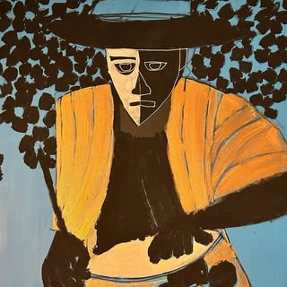
Andrés Papantonakis/ Rose
Artista neurodiverso, amante del candombe y las comparsa


Artista neurodiverso, amante del candombe y las comparsa
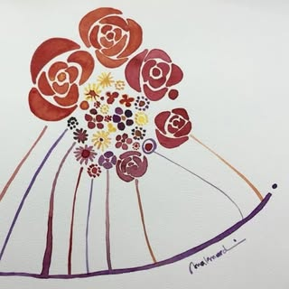
Artista plástica
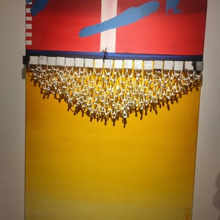
Arte plástico/ pintura y collage técnica mixta
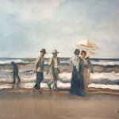
Sicóloga/ óleo
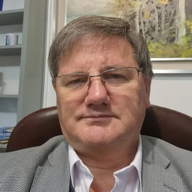
Alterna los paisajes al óleo con el arte abstracto en acrílico
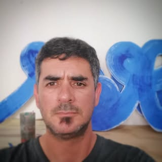
Artista plástico/ arte abstracto tridimensional y el ensamblaje/ formas de madera, técnicas mixtas
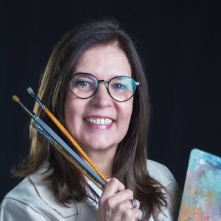
Impresionista
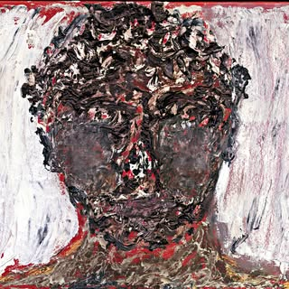
Artista visual
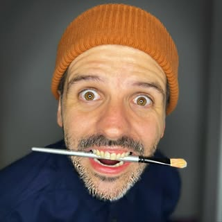
Soy un artista, ilustrador y diseñador
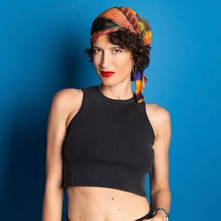
Fotógrafa artística y comercial + productora
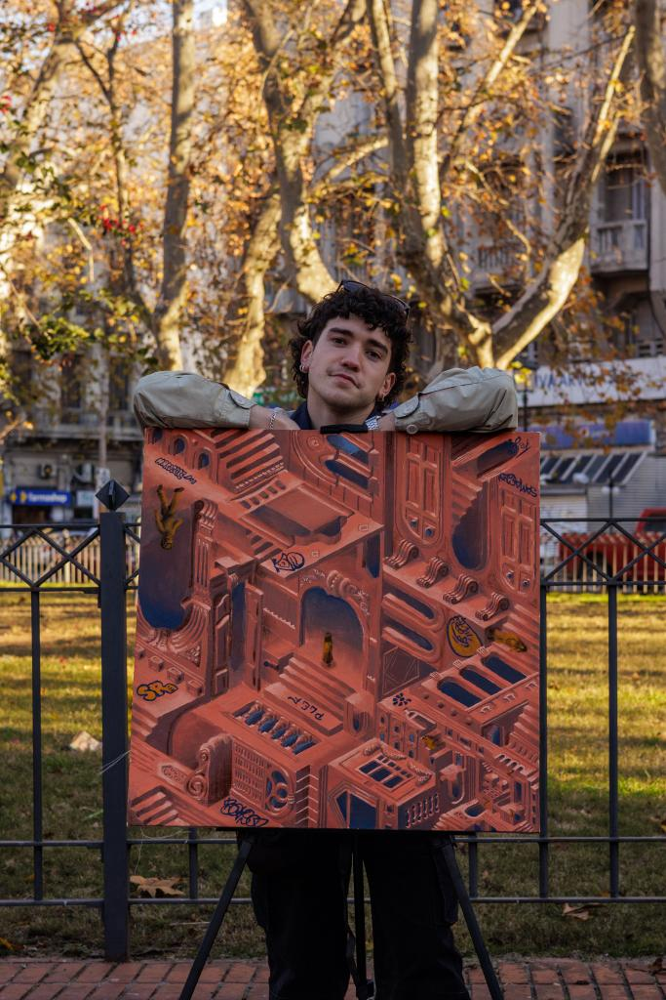
Artista plástico, que explora a través de su obra el complejo entramado urbano moderno y su devenir
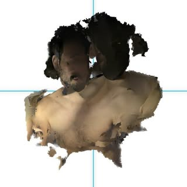
Artista multimedia, especializado en experiencias digitales creativas
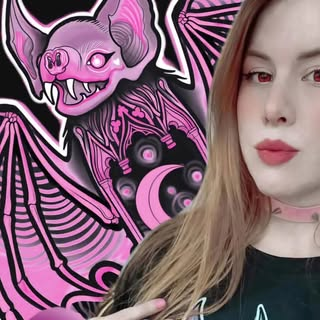
Artista visual (ilustración, pintura y tatuaje)
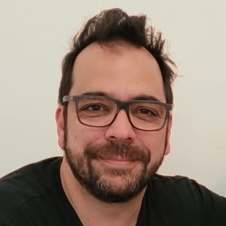
Artista plástico
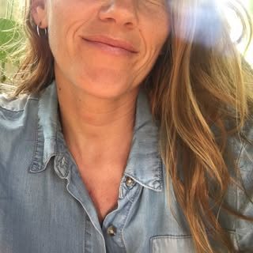
Artista visual
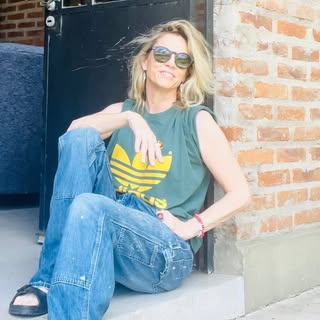
Artista plástica y fotógrafa
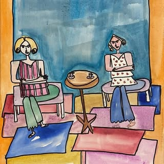
Cuadros abstractos y figurativos. Pinto en óleo acrílico y marcadores.
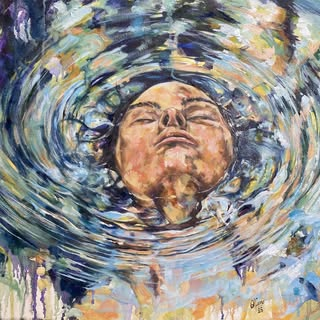
Artista visual
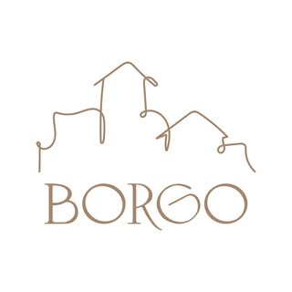
Arte textil. Técnicas mixtas.
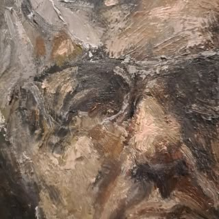
Arquitecto/ artista plástico
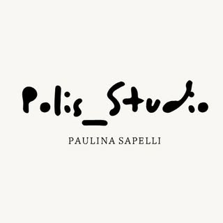
Retratos en óleo
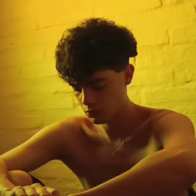
Autor plástico
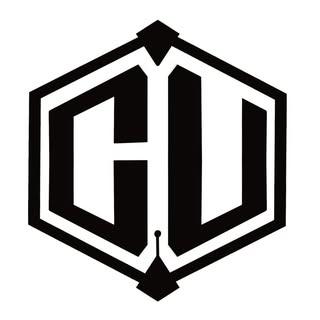
Estilo cubismo fusionado con realismo sobre cualquier lienzo: bastidor, prendas textiles o calzado.
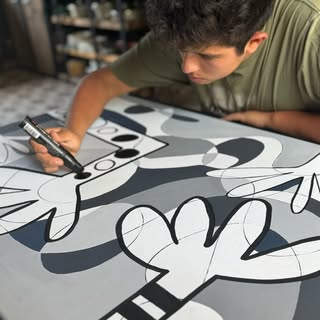
Técnica Mixta, Acrílico y Pastel al Oleo Seco sobre Tela.
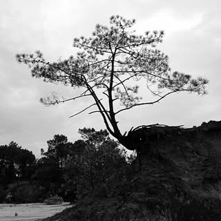
Artes Plásticas y Visuales
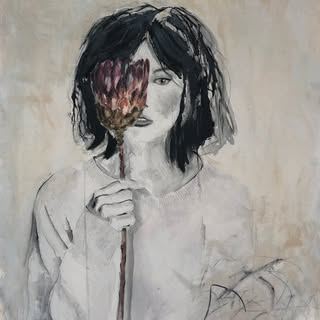
Pintura figurativa/ figuración sintética
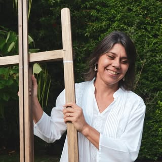
Trabajo con diferentes técnicas que me permiten crear lo que me sensibiliza. Entre mis materiales preferidos, se encuentra el óleo por su maleabilidad y nobleza.
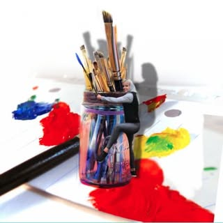
Artista visual- Tecnica: oleo sobre tela / pintura abstracta
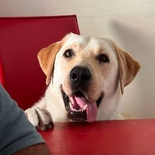
Taller Luis Alvarez
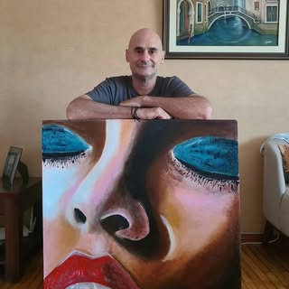
Dibujante y pintor
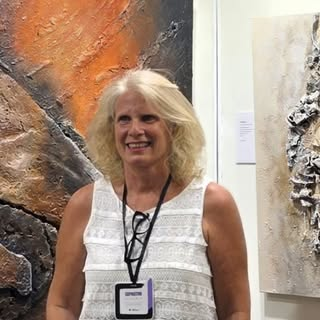
Artista visual contemporánea - relieves
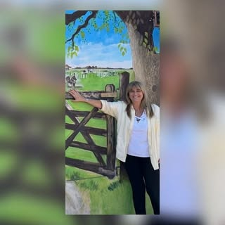
Técnicas mixtas, actualmente estoy en el taller de Luis Álvarez estudiando dibujo, óleo y workshops de color. También con Margarita Traverso, técnicas mixtas e ilustrando en acuarela un libro de mi autoría.
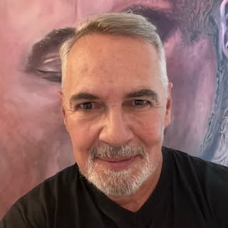
Artista plástico
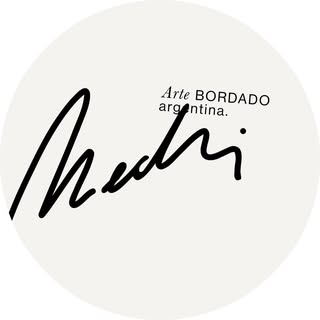
Bordado contemporáneo
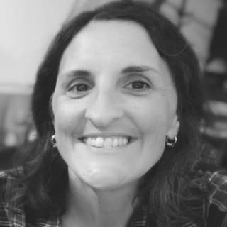
Profesora de arte y comunicación visual
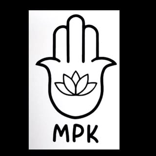
Escultura y cerámica, grés, porcelana, resina y bronce
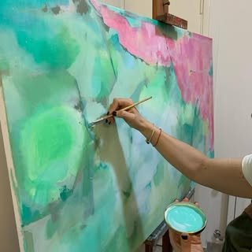
Arquitecta / óleo
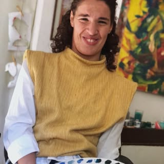
Artista plástico
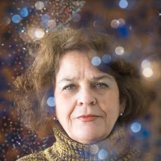
Artista plástico
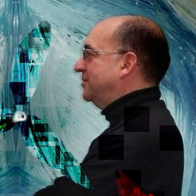
Artista plástico
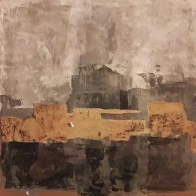
Decoracion de interiores./ Mis obras comienzan con una idea abstracta/ En muchas ocasiones utilizo técnicas mixtas como el dorado/plateado a la hoja
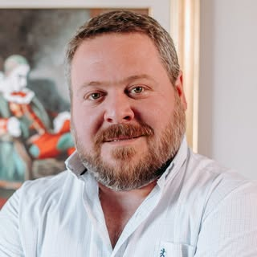
Artista plástico
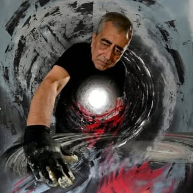
Artista Plástico autodidacta/ Retablos en maderas con más de 200 años y telas con técnica mixta abstracto
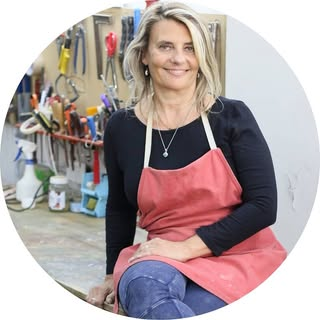
Escultura/ telas
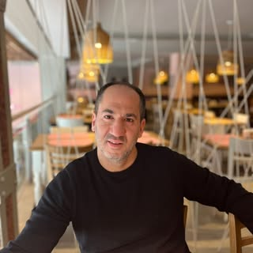
Dibujo del natural / desnudo y el estudio del cuerpo humano.
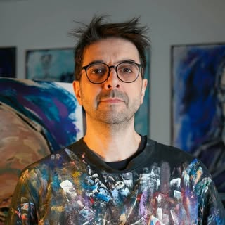
Pintura figurativa/ óleo/ periodista
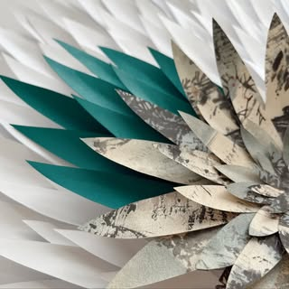
Obras de papel calado y collage.
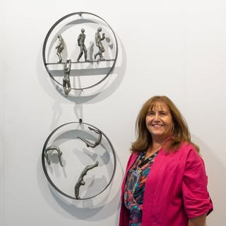
Dedicada a pintura y escultura, estudio varias disciplinas óleo, acuarela, acrílico, cerámica, fotografía y esculturas / Arquitecta
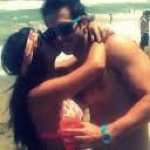
Escultura
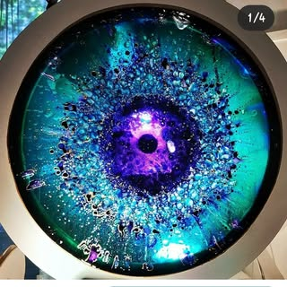
Artista visual
Obras en pastel seco
Artista plástica
Taller sisto pascale
Pintura figurativa/ retrato femenino
Arquitecta y Fotógrafa
Abstractos / acrílico y utiliza diferentes materiales y técnicas.
Artista plástico - ceramista
Artista plástica
Artista plástica
Pintura
Mandalas/ muralismo/ técnicas mixtas
Artista visual
Artista visual
Trabajo con madera
Pintura + poesía
Realismo mágico contemporáneo
Pintura
Artista visual
Óleo/ realismo
Joyería contemporánea y arquitecta
Artista plástica y arquitecta
Joyería Contemporánea
Pintura y escultura
Artista plástica visual
Artista plástica
Artes plásticas/ hiperrealismo y la pintura al óleo
Artes Plásticas y Visuales
Artista plástico
Artista visual textil
Artista visual dedicada al arte textil.
Soy artista visual/ talleres con Clever Lara, Prunell, Emilio Bolinches, Gustavo Fernández, Gerardo Ruiz y Aldo Curto
Textil
Fotografía
Artista plástica/ pintura al óleo
Artista plástico autodidacta/ acuarela
Acuarleista
Artista plástico
Pintura
Artista visual y diseñador